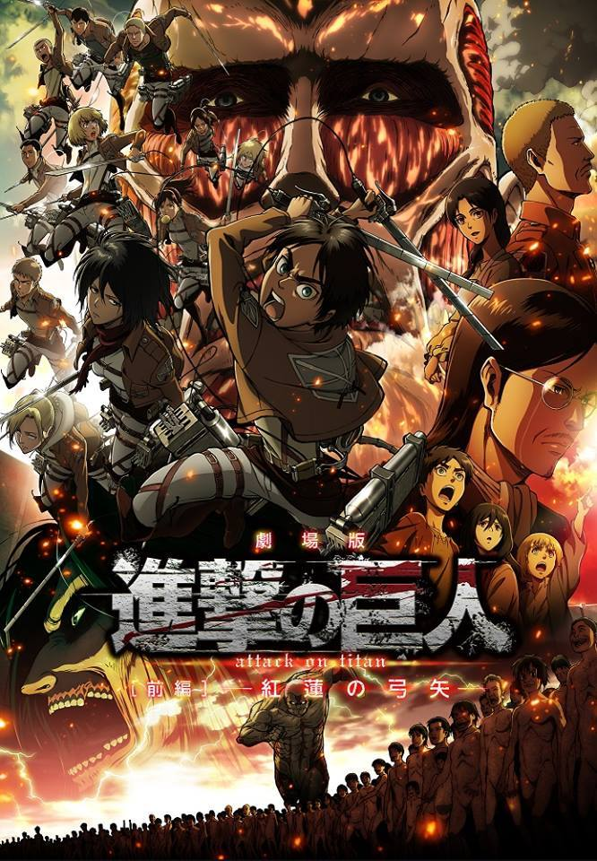
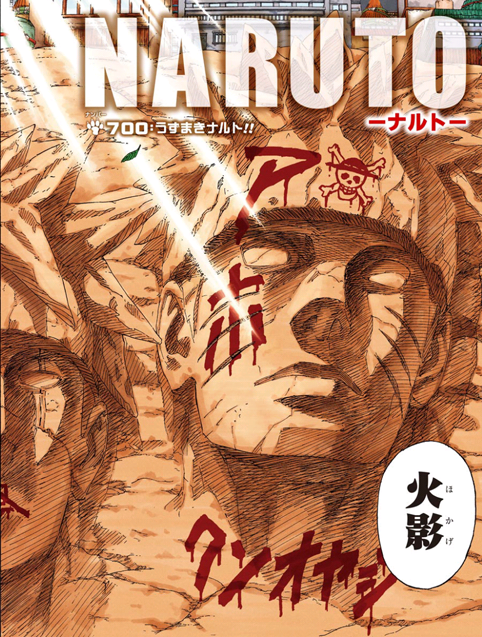
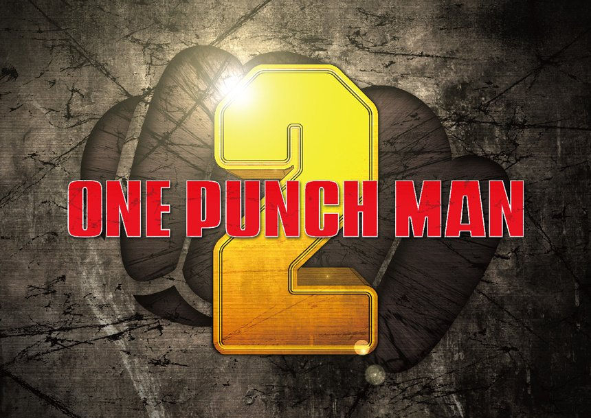

by Batalan Vlad
Most recent news
By Hajime Isayama 5Nov 2016
The anticipation of fans on the release of "Attack on Titan" Season 2 has been building up for some time. Recent reports though have indicated that "A.O.T" Season 2 will be finally released on the last quarter of 2016 that is if everything goes according to their plans.
It has been three years since news about "Attack on Titan" Season 2 was reported. But according to The Bitbag, the manga series which it follows is almost 60 percent finish. This means that the production is following suit as "A.O.T" has already provided viewers a sneak peak of its second season last year.
Continue reading...By Masashi Kishimoto 10Nov 2016
Naruto, one of the biggest manga phenomenons in recent memory, has finally come to a close—and as with all the other great Endings, it's controversial.
The growth and adventures of Naruto, Sasuke, Sakura, and their friends and enemies in the ninja-friendly town of Konoha has lasted 15 years, covered a whopping 700 chapters, and spawned one of the most popular anime series in history. Needless to say, a lot was riding on the ending.
Much like the Epilogue from Harry Potter, Naruto's creator Masashi Kishimoto may have given fans too much information—at least about the utimate fates of the main trio and their lives in the future.
Continue reading...By One 10Oct 2016
Because of the overwhelming support of the first season, "One Punch Man" Season 2 is expected by fans and it is said that the show's second season is officially confirmed.
According to reports, it's possible that "One Punch Man" Season 2 will be released on 2017 together with the smart phone mobile game app which was also confirmed by the staff.
The plot of the second season suggests that it will deviate from the original material and will highlight on the origin or back story of Saitama. It is also reported that Saitama will be facing different enemies including Amai Mask, Garou and another face off with Lord Boros who returned to fight with him.
Continue reading...